Learning Objectives
- Making better plots for outreach and communication.
- Review how to produce scatter plots with trendlines using ggplot.
- Advanced faceting and segmenting data.
- Altering aesthetic features in ggplot.
- Make bar and other graphs using ggplot.
- Making interactive and quick graphs.
- Saving graphs.
Lesson outline
- How to visualize data (20 min)
- ggplot basics (10 min)
- Basics and faceting (10 min)
- Aesthetics and plot types (25 min)
- Interactive and quick graphing (10 min)
- Saving graphs (5 min)
Setup
- Make sure to install
plotly(install.packages("plotly")).
What makes a bad graph? What makes an ugly graph to you?
There are many considerations to take into account when creating a graph.
Data types:
And data features:
Ask: “what kind of data/information is it?”
Reduces the proportion of graphic’s ink devoted to the non-redundant display of data-information.
Avoid “chartjunk” - extraneous visual elements that detract from message.
| Visual Attribute | Non-Data | Data |
|---|---|---|
| Line Thickness | Thin | Thick |
| Size | Small | Big |
| Brightness Contrast | Decrease | Increase |
| Colour Saturation | Decrease | Increase |
ggplot2 is inspired by the principles from the Grammar of Graphics and also named thereafter. The basic notion is that there is a grammar to the composition of graphical components in statistical graphics, and by directly controlling that grammar, you can generate a large set of carefully constructed graphics tailored to your particular needs. Each component is added to the plot as a layer.
Plots convey information through various aspects of their aesthetics. Some aesthetics that plots use are:
The elements in a plot are geometric shapes, like
Some of these geometries have their own particular aesthetics. For instance:
points
lines
bars
text
Here is an example of the base plotting functions in R:
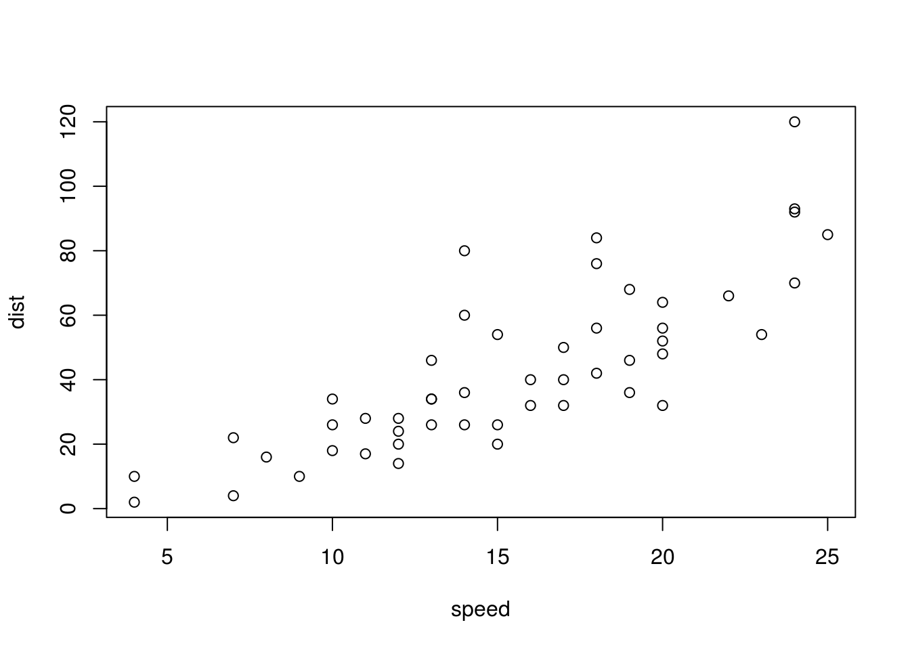
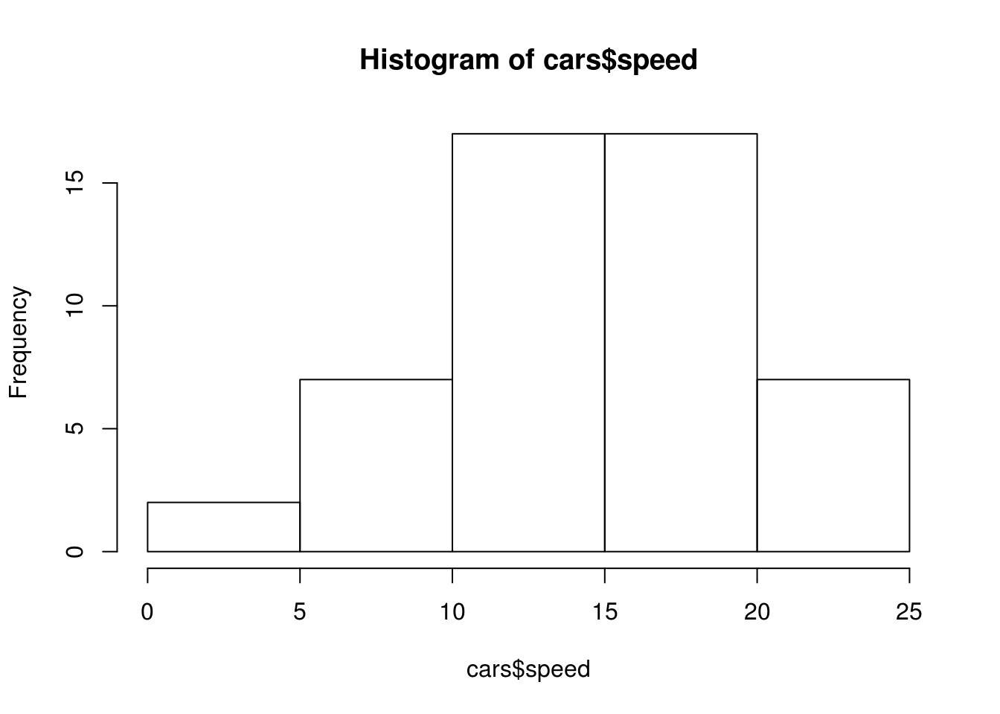
You’ve already made a few basic plots in ggplot.
We’ll investigate the dataset we’re going to use to make some graphs….
## 'data.frame': 150 obs. of 5 variables:
## $ Sepal.Length: num 5.1 4.9 4.7 4.6 5 5.4 4.6 5 4.4 4.9 ...
## $ Sepal.Width : num 3.5 3 3.2 3.1 3.6 3.9 3.4 3.4 2.9 3.1 ...
## $ Petal.Length: num 1.4 1.4 1.3 1.5 1.4 1.7 1.4 1.5 1.4 1.5 ...
## $ Petal.Width : num 0.2 0.2 0.2 0.2 0.2 0.4 0.3 0.2 0.2 0.1 ...
## $ Species : Factor w/ 3 levels "setosa","versicolor",..: 1 1 1 1 1 1 1 1 1 1 ...Recall:
Once we’ve defined the structure of our graph, we need to add a “layer” to it in order to define what type of graph it is. Let’s make a scatterplot:
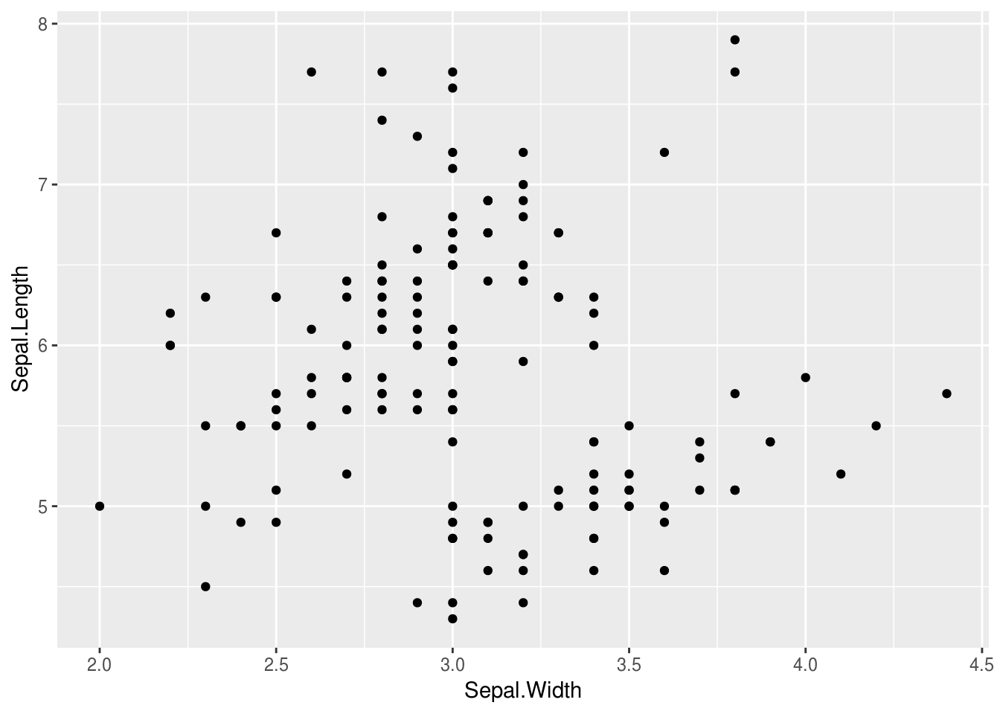
You can also save the structure of the graph to a variable and then add layers and other attributes to it. Let’s do that:
We can add other “layers” of graphs to our first graph. Let’s add a trend line to our scatterplot:
## `geom_smooth()` using method = 'loess' and formula 'y ~ x'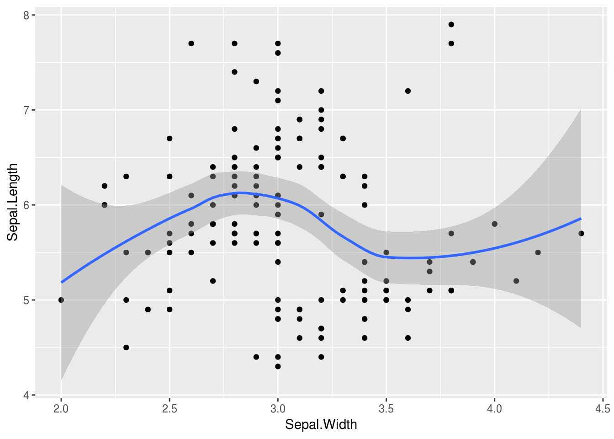
We can also “facet” our graphs, which means dividing a plot into subplots based on the values of one or more discrete variables.
## `geom_smooth()` using method = 'loess' and formula 'y ~ x'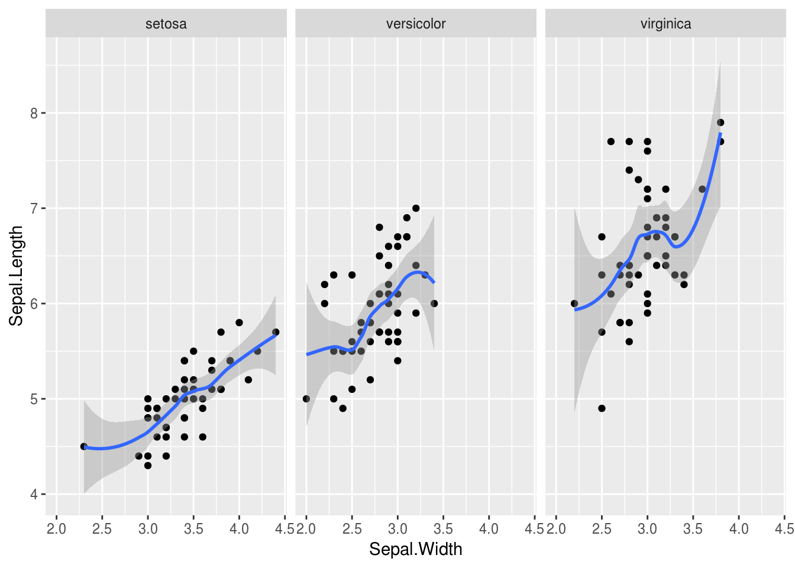
There are lots of ways to organize your facet. See “faceting” at the bottom of ggplot cheatsheet.
Let’s say we don’t want to facet, but we want to colour the dots depending on the species:
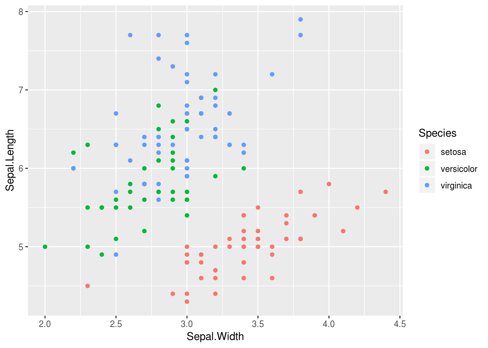
We can change other aesthetic features of the graph. Let’s get rid of the colour aspect of our structure and change the colour and size of the points:
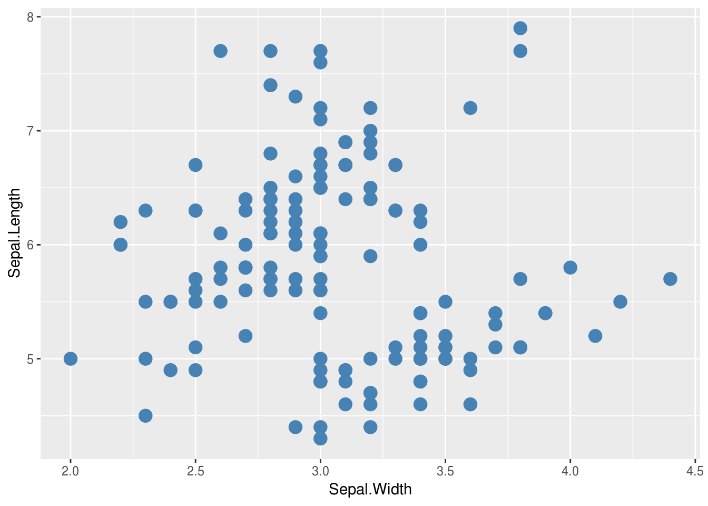
Going back to our graph coloured by species, what if we want to change other aspects, like the theme, or centre the title?
ggplot(iris, aes(x = Sepal.Width, y = Sepal.Length, color = Species)) +
geom_point() +
ylab("Sepal Length") +
xlab("Sepal Width") +
ggtitle("Sepal Width by Sepal Length") +
theme_bw() +
theme(plot.title = element_text(hjust = 0.5))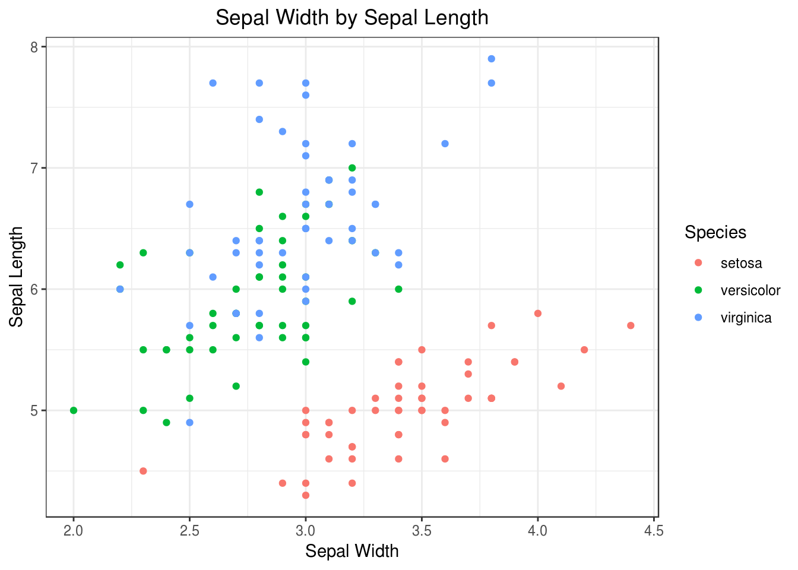
What about changing the font? Let’s get rid of our preconfigured theme for a moment, which changes many aspects of the aesthetics at once. Let’s spend some time building our own theme…
ggplot(iris, aes(x = Sepal.Width, y = Sepal.Length, color = Species)) +
geom_point() +
ylab("Sepal Length") +
xlab("Sepal Width") +
ggtitle("Sepal Width by Sepal Length") +
theme(
plot.title = element_text(hjust = 0.5),
text = element_text(size = 8, family = 'Times'),
legend.title = element_blank()
)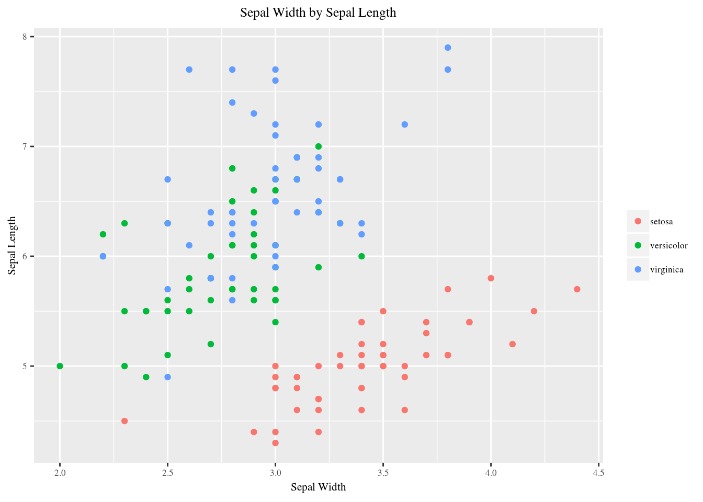
You can add your own alterations to themes. For example, here is an APA theme built on top of the base theme_bw(). Themes can be saved into variables so they don’t need to be typed out every time you use a graph.
apatheme <- function() {
theme_bw() +
theme(
panel.grid.major = element_blank(),
panel.grid.minor = element_blank(),
panel.border = element_blank(),
axis.line = element_line(),
text = element_text(family = 'Times'),
legend.title = element_blank()
)
}
ggplot(iris, aes(x = Sepal.Width, y = Sepal.Length, color = Species)) +
geom_point() +
ylab("Sepal Length") +
xlab("Sepal Width") +
ggtitle("Sepal Width by Sepal Length") +
apatheme()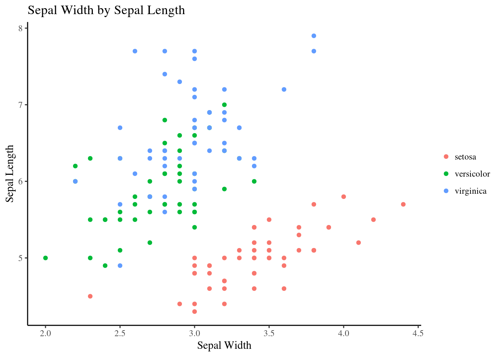
This is a resource on which parts of the plot are controlled by different theme parameters when and if you create your own theme.
What if we want a bar graph of Sepal Length by Species?
ggplot(iris, aes(x = Species, y = Sepal.Length)) +
geom_bar(stat='summary', fun.y='mean') +
ylab("Sepal Length") +
xlab("Species") +
ggtitle("Sepal Length by Species") +
theme_bw() +
theme(plot.title = element_text(hjust = 0.5))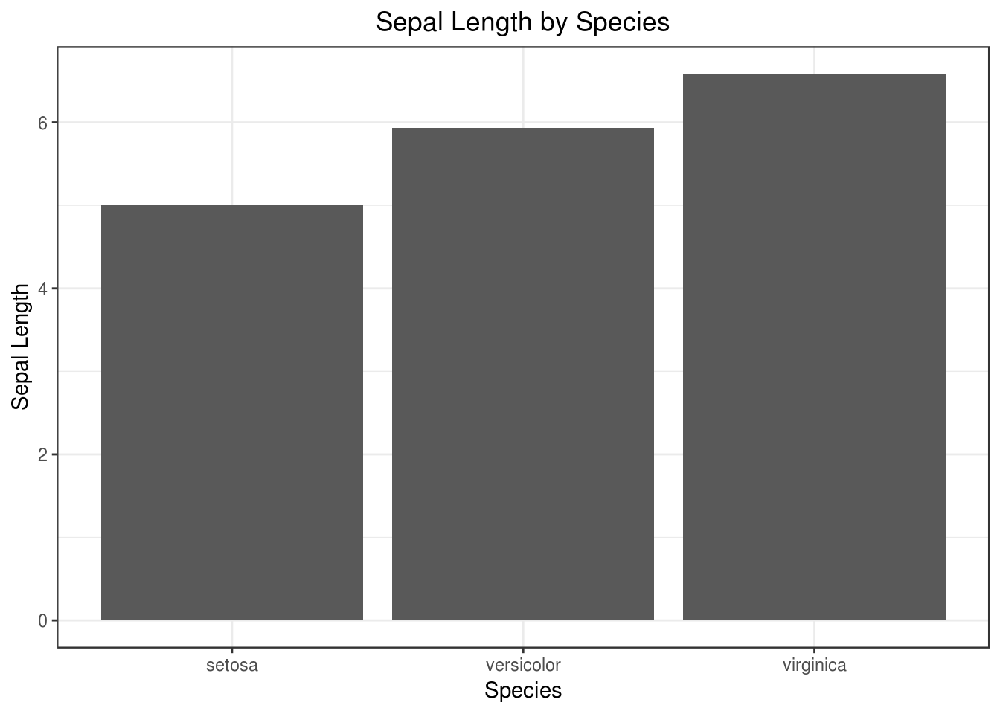
As you can see, it is a bit cumbersome to create barplots of means with ggplot (you need to add stat='summary', fun.y='mean'). The default behaviour of geom_bar is to count observations instead of summarize them, which actually is a more appropriate use of a barplot for reasons that we will cover below.
ggplot(iris, aes(x = Species, y = Sepal.Length)) +
geom_violin() +
ylab("Sepal Length") +
xlab("Species") +
ggtitle("Sepal Length by Species") +
theme_bw() +
theme(plot.title = element_text(hjust = 0.5))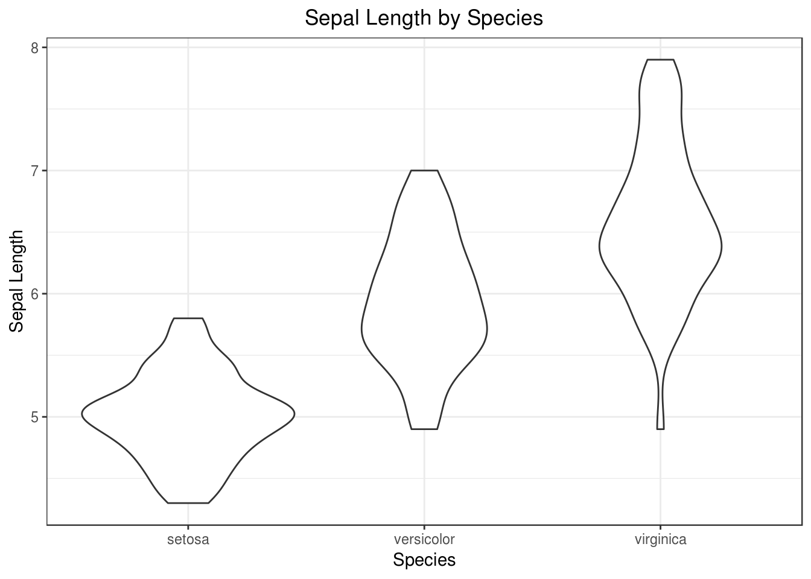
We can use boxplots to visualize the distribution Sepal Length within each species:
ggplot(data = iris, aes(x = Species, y = Sepal.Length)) +
geom_boxplot() +
ylab("Sepal Length") +
xlab("Species") +
ggtitle("Sepal Length by Species") +
theme_bw() +
theme(plot.title = element_text(hjust = 0.5))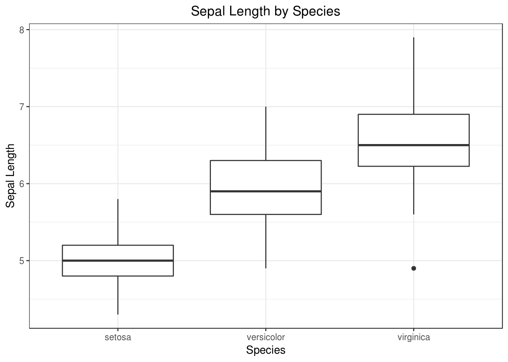
Out of the barplot, boxplot and violinplot, which one do you think is the most informative and why? Which is the most true to the underlying data and how would you know this?
We will deepen the discussion around some of these ideas, in the context of the following plot:
*Reproduced with permission from Dr. Koyama’s poster*
Similar to the ideas of Tufte, it is generally advisable to avoid “decorative” plot elements that do not convey extra information about the data, especially when such elements hide the real data. For example, in the rectangles that make up these bars, the only relevant information is given by the where the rectangles ends on the y-axis, the rest of it is unnecessary and you could just have used a marker (circle, square, etc) to indicate the height on the y-axis instead. Note that the body of the rectangle is not representative for where the data lies, there are probably no data points close to 0, and several above the rectangle.
Barplots are especially misleading when used as data summaries, as in the example above. In a summary plot, only two distribution parameters (a measure of central tendency, e.g. the mean, and error, e.g. the standard deviation or a confidence interval) are displayed, instead of showing all the individual data points. This can be highly misleading, since different underlying distributions can give rise to the same summary plot just as when we previously discussed that the different distributions from the datasaurus R-package can give rise to the same linear regression coefficients. We also have no idea of how many observations there are in each group. These shortcomings become evident when comparing the barplot to the underlying distributions that were used to create them:
*Reproduced with permission from Dr. Koyama’s poster*
Immediately, you can see that conclusions drawn from the barplot, such that A and B have the same outcome, are factually incorrect. The distribution in D is bimodal, so representing that with a mean would be like observing black and white birds and conclude that the average bird colour is grey, it’s nonsensical. If we would have planned our follow up experiments based on the barplot alone, we would have been setting ourselves up for failure! Always be sceptical when you see a barplot in a published paper, and think of how the underlying distribution might look (note that barplots are more acceptable when used to represents counts, proportion or percentages, where there is only one data point per group in the data set).
Boxplots and violin plots are more meaningful data summaries as they represent more than just two distribution parameters. However, these can still be misleading and it is often the most appropriate to show each individual observation with a dot/hive/swarm plot, possibly combined with with a superimposed summary plot or a marker for the mean or median if you think this conveys additional information. One exception, when it is not advisable to show all data points, is when your data set is gigantic and plotting each individual observation would oversaturate the chart. Here, you are forced to show summary plots or a 2D histogram.
Here is an example of how you can plot a boxplot, together with the individual observations:
ggplot(data = iris, aes(x = Species, y = Sepal.Length)) +
geom_boxplot(alpha = 0) +
geom_jitter(alpha = 0.3, color = "tomato")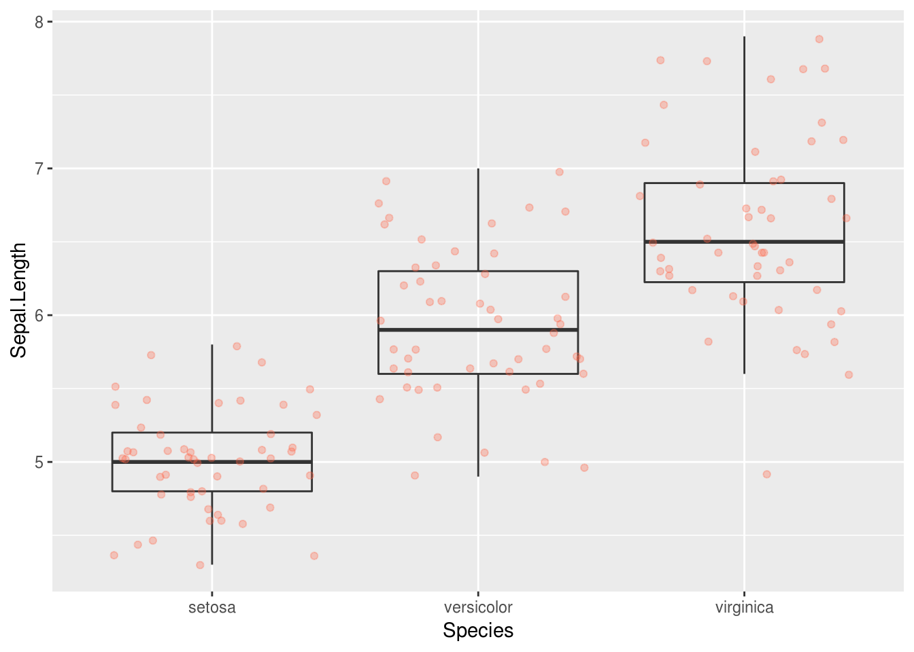
Notice how the boxplot layer is behind the jitter layer? What do you need to change in the code to put the boxplot in front of the points such that it’s not hidden?
So far, we’ve looked at the distribution of sepal length within species. Try making a new plot to explore the distribution of another variable within each species.
What about making interactive graphs in R? There is a package called plotly that lets us make our ggplot2 graphs interactive:
##
## Attaching package: 'plotly'## The following object is masked from 'package:ggplot2':
##
## last_plot## The following object is masked from 'package:stats':
##
## filter## The following object is masked from 'package:graphics':
##
## layoutCreate another type of interactive graph (i.e. not a bar graph) using these data. What kinds of graphs might interactivity add or improve the communication and clarity of your message to?
Parts of this lesson material were taken and modified from Software Carpentry under their CC-BY copyright license. See their lesson page for the original source.
This work is licensed under a Creative Commons Attribution 4.0 International License. See the licensing page for more details about copyright information.